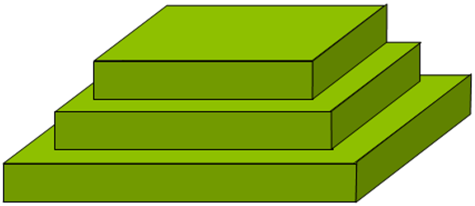
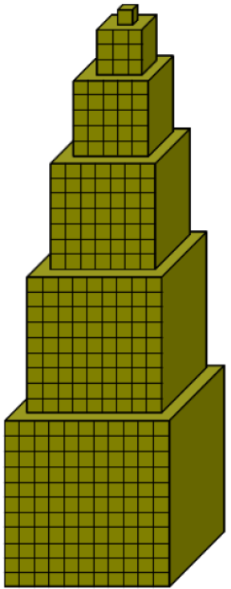

UAA11 TP4 : Les Boucles
Notions abordées :
-
boucles condionnelles non bornées (
while) -
boucles itératives bornées (
forin range) -
arrêt et sortie d'une boucle (
break)
UAA11 TP4-1 : Les Boucles conditionnelles
Mémo
-
Prends connaissance du cours sur les boucles conditionnelles (attention il s'agit du chapitre 3 p3 !!!), fais les activités ci-dessous puis réponds aux questions QCM du pdf.
-
Tu peux tester ton code avec l'IDE du chapitre "TBD. Bac à sable"
-
Complète ton fichier "memo" avec ce que tu as appris au fur et à mesure de ton avancement dans le cours.
1. Découverte des boucles conditionnelles while ...
Découv 1 : Mystère
On considère le code suivant :
def mystere() :
somme = 2000
nb_annees = 0
while somme < 3000:
somme = somme * 1.02
nb_annees = nb_annees + 1
return nb_annees, somme
mystere ? Donnes-une interprétation concrète.
Découv 2 : Placement bancaire
On dépose une somme d'argent sur un compte rémunéré et on désire savoir combien d'années on doit attendre avant que la somme disponible sur ce compte ait atteint une valeur particulière. On veut aussi connaître la somme disponible réellement à cet instant, au centime d'euro près.
En t'aidant de la fonction écrite à l'exercice précédent, complète la fonction placement_bancaire_seuil pour qu'elle renvoie la réponse à ce problème.
# Tests (insensible à la casse)(Ctrl+I)
(Alt+: ; Ctrl pour inverser les colonnes)
(Esc)
Découv 3 : Culture de bactéries ( Maison )
A l'instant \(t=0\), on met en culture une population de bactéries qui augmente de \(10,5\%\) toutes les heures.
En t'aidant des fonctions écrites aux tests 1 et 2, écris une fonction attente_seuil_bacteries prenant en paramètres deux entiers pop_initiale et pop_finale correspondant respectivement à la taille initiale de la population mise en culture et à la taille de la population que l'on veut atteindre, et renvoyant le nombre d'heures à attendre pour atteindre cette taille.
# Tests (insensible à la casse)(Ctrl+I)
(Alt+: ; Ctrl pour inverser les colonnes)
(Esc)
Découv 4 : Jeu de rôle
Dans un jeu, un joueur dispose de 250 points de vie. Il subit des attaques successives dont les valeurs sont des nombres entiers aléatoires entre 10 et 40.
Lorsque le nombre de points de vie du joueur devient négatif ou nul, on dit que le joueur s'évanouit.
-
complète le code de la fonction ci-dessous afin qu'elle renvoie le nombre d'attaques que le joueur peut subir jusqu'à ce qu'il s'évanouisse.
###(Dés-)Active le code après la ligne# Tests(insensible à la casse)
(Ctrl+I)Entrer ou sortir du mode "deux colonnes"
(Alt+: ; Ctrl pour inverser les colonnes)Entrer ou sortir du mode "plein écran"
(Esc)Tronquer ou non le feedback dans les terminaux (sortie standard & stacktrace / relancer le code pour appliquer)Si activé, le texte copié dans le terminal est joint sur une seule ligne avant d'être copié dans le presse-papier.128013 0bn6_+589i:aw;q)o l/krs-e,2(mch1=tSfP4gpv*d7u3y 050R0z0I0m0k0t0x0s0E0t0m0x0x0H010I0k0O010406050x0T0D0D0m0w0V040J0r0t0T0:0r0d050u0`0|0~100^0O04051g191j0u1g0^0R0k0P0(0*0,0.0F0k0N0F0t1x0F0I0?050Z0c0t0z1s0+0-011w1y1A1y0I1G1I1E0I0w1h0I0F0(130x0O0m0d0.0B011K1u010K0#0z0d0m0D0z1E1%1)1.1M1;1I1@1_0?0a0s0L0w0r0O0r0x0k160d0s0X1#0w0w0z0E2e191|0d1h0u1Z2r1W1Y1X1F0R1~0.1A0d1?2b1E1p1r0)1L2B0k2D0d0r2H1E0O2k1h2p2r2V0_1(2f2J1/2O0w0}0t0?0s0G2o2Z0@2Y1}2#1M2%2)2+0B2.1)2:2p2A012^0m2*040s0U2|2q0^2 2?0.32340s0M382~2Z303e2+0h3i3a3k3c310r2(332+0e3p2;2!1t2@3u2_350S3z3b3C3d3E3w350i3I3r3K3t3v3f0j3Q2=3S3m040G0b3X3B2K3T3F0G2-1a2/1k2T192H2u0R1Y2z3s0E2P1`1h3@1i3=2X3/2}053}0X2U3R3*0v0d0?0K280D3i0s3A3l4e040w1)0R0r4i452q4k3J4c4n0k0D2a0w0I4j4l3s0r0?0Q3p3q3Y4c0?0X0K4F4x2$0K0?0m1S0m0p0T0z0x0f330z4X0r0k2k0x3i4G3S0=040C0q0l3p0s4|4w4b2$0?2a2M0I4%0P0k0z4S4 1M4I040H594N1/0D0k0?0B0h3%4u0@4}4~5g2@0?0d0c4(4Y4!4$5f3)1/5c5e5o5r5C1M5i0?5n2V065q4;4O040n1w1I5B3l514,0d540f56585G5Q5D0?020N0I0o5W3s5K045M2/5H304?4`5o5O5q4}5*5t044X0Z5z5;3S5E683*4n4p0d1p5!4:4T1M4?0C6i5a0.5?3$6n5s0.4?0A6b5h5j040M5^466j6u0?0q4{604|623d5Y5355576x5b0?0y5F2V5`3s4n654Z4#6I6J6L315u5w6!5z4/5o6)5c0g6V3:6E016q6%606)5v510w536s5I6F4@73300x1,04024!0r5/0X0c0T0N0o0s7c0T7e5:6:6_6v6R6M645y6$7q6o017s5)6_4n525!6P5(2X7r0?6w7C7z4n5v5x664#6/7J7z4?6H5~5P6_0v0?2k0I0T0w187N6t6*047Q6-7T3z0u480z2r2S7`3?1q3^2u2x2s0m1H7}0u3@0^870Y0!0$04. -
- Le joueur dispose à présent d'une défense de
25. Lorsqu'il subit une attaque de valeurattaque, on applique la règle suivante : -
si la valeur de l'attaque est strictement supérieure à celle de la défense, le joueur perd
attaque : 25points de vie ; -
si la valeur de l'attaque est inférieure ou égale à celle de la défense, le joueur ne perd aucun point de vie.
complète la fonction suivante afin qu'elle renvoie le nombre d'attaques que le joueur peut subir dans ces conditions jusqu'à ce qu'il s'évanouisse.
###(Dés-)Active le code après la ligne# Tests(insensible à la casse)
(Ctrl+I)Entrer ou sortir du mode "deux colonnes"
(Alt+: ; Ctrl pour inverser les colonnes)Entrer ou sortir du mode "plein écran"
(Esc)Tronquer ou non le feedback dans les terminaux (sortie standard & stacktrace / relancer le code pour appliquer)Si activé, le texte copié dans le terminal est joint sur une seule ligne avant d'être copié dans le presse-papier.128013 0bn6_+589i:aw;q)o l/krs-e,2(mch1=tSfP4gpv*d7u3y 050R0z0I0m0k0t0x0s0E0t0m0x0x0H010I0k0O010406050x0T0D0D0m0w0V040J0r0t0T0:0r0d050u0`0|0~100^0O04051g191j0u1g0^0R0k0P0(0*0,0.0F0k0N0F0t1x0F0I0?050Z0c0t0z1s0+0-011w1y1A1y0I1G1I1E0I0w1h0I0F0(130x0O0m0d0.0B011K1u010K0#0z0d0m0D0z1E1%1)1.1M1;1I1@1_0?0a0s0L0w0r0O0r0x0k160d0s0X1#0w0w0z0E2e191|0d1h0u1Z2r1W1Y1X1F0R1~0.1A0d1?2b1E1p1r0)1L2B0k2D0d0r2H1E0O2k1h2p2r2V0_1(2f2J1/2O0w0}0t0?0s0G2o2Z0@2Y1}2#1M2%2)2+0B2.1)2:2p2A012^0m2*040s0U2|2q0^2 2?0.32340s0M382~2Z303e2+0h3i3a3k3c310r2(332+0e3p2;2!1t2@3u2_350S3z3b3C3d3E3w350i3I3r3K3t3v3f0j3Q2=3S3m040G0b3X3B2K3T3F0G2-1a2/3q3Y3*3!0G2{3/2}3;3)2$3M340G373`2q1k2T192H2u0R1Y2z3s0E2P1`1h481i462X431h4e0X2U3R3*0v0d0?0K280D3i0s3A3l4u040w1)0R0r4y4m4A3J4s4D0k0D2a0w0I4z4B3s0r0?0Q3p3|300v0?0X0K4U4M2$0K0?0d0c0f0m1S0m0p0T0z0x4=1I4?0r0k2k4|4)1?0x0z3i4V3S0=040C0q0l3p0s5h4L4r2$0?2a2M0I4|0P0k574K593*4X040H4+5k1M0D0k0?0B0h3%4m065i5j3=5l044:4=4@4_4{5A5N1M5x5z5u4,5C5E045I2V5K5i5v5O540d565V3}5X0?5Z2V5M5?0.5D5F3o5J5L5-1M4%040n1w1I5=3l5m500d5p0f5r5t5`630.5x020N0I0o6a3s5~5(6r5a0?5f615L5,5#3d0?4?0Z5T6v5w5^6I5O4F0d1p6e586C015b0C6R5B5}5%3$6W5W0.5b0A6L5$0?0M5)2/6k6T0?0q5g6A5h6:650k4*5!6X316E5S4`6*6l0?6n6p7470045/5;6~6$6;046y5*6^6^6:4D5n6e5q5s795x0y5_2/5{306U6#5|7a6F4^737e7B7t794D7c6i6/6S5b6?6z7l6S4D5Q7D5T0x7A305x0g7v2}6:6t3.7j7k7m0c5m0w5o7Z3s7z4m6:0x1,04024_0r6p0X0c0T0N0o0s7~0T806q7_7O0?6)7G6b047W7F2X8d048f6j7T6c5o7q7M7(8m8o7w7m4/4;8j5U8c6 7P6@6_6S652k0I0T0w188g3s7U8B728D5*194o0z2r2S8Z471q492u2x2s0m1H8$0u480^8:0Y0!0$04. - Le joueur dispose à présent d'une défense de
-
- On modifie la fonction précédente en une fonction
nb_attaques_aléatoires_points_vie_défensepour qu'elle fonctionne avec n'importe quel nombre de points de vie, n'importe quelle défense et des attaques successives prenant des valeurs entières aléatoires entre deux nombres entiers prédéfinis en respectant la règle suivante : -
si la valeur de l'attaque est strictement supérieure à celle de la défense, le joueur perd
attaque : défensepoints de vie ; -
si la valeur de l'attaque est inférieure ou égale à celle de la défense, le joueur ne perd aucun point de vie.
- Ecris ci-dessous le code de cette fonction où les paramètres sont définis de la façon suivante :
-
points_vieest le nombre de points de vie initial du joueur ; -
défenseest la défense du joueur ; -
val_min_attaqueest la valeur minimale que peut prendre une attaque ; -
val_max_attaqueest la valeur maximale que peut prendre une attaque.
Tous les paramètres de la fonction sont des nombres entiers strictement positifs.
###(Dés-)Active le code après la ligne# Tests(insensible à la casse)
(Ctrl+I)Entrer ou sortir du mode "deux colonnes"
(Alt+: ; Ctrl pour inverser les colonnes)Entrer ou sortir du mode "plein écran"
(Esc)Tronquer ou non le feedback dans les terminaux (sortie standard & stacktrace / relancer le code pour appliquer)Si activé, le texte copié dans le terminal est joint sur une seule ligne avant d'être copié dans le presse-papier.128013 0bn6_+589ix:aw;q)o l/krs-e,2(mch1=tSfP4gpv*d7u3y 050S0A0J0n0k0u0y0t0F0u0n0y0y0I010J0k0P010406050y0U0E0E0n0x0W040K0s0u0U0;0s0d050v0{0}0 110_0P04051h1a1k0v1h0_0S0k0Q0)0+0-0/0G0k0O0G0u1y0G0J0@050!0c0u0A1t0,0.011x1z1B1z0J1H1J1F0J0x1i0J0G0)140y0P0n0d0/0C011L1v010L0$0A0d0n0E0A1F1(1*1/1N1=1J1^1`0@0a0t0M0x0s0P0s0y0k170d0t0Y1$0x0x0A0F2f1a1}0d1i0v1!2s1X1Z1Y1G0S1 0/1B0d1@2c1F1q1s0*1M2C0k2E0d0s2I1F0P2l1i2q2s2W0`1)2g2K1:2P0x0~0u0@0t0H2p2!0^2Z1~2$1N2(2*2,0C2/1*2;2q2B012_0n2+040t0V2}2r0_302@0/33350t0N392 2!313f2,0h3j3b3l3d320s2)342,0e3q2=2#1u2^3v2`360T3A3c3D3e3F3x360i3J3s3L3u3w3g0j3R2?3T3n040H0b3j1l2U1a2I2v0S1Z2A3t0F2Q1{1i3-1j3+2Y1b2:053?0Y2V3S2L010w0d0@0L290E3j0t3B3m48040x1*0S0s4c3~2~4e3K45470@0k0E2b0x0J4d4f3t0s0@0R3q3r3Z4s0@0Y0L4A4r2%0L0@2b2N0J0y0f0Q0k0A0f0n1T0n0q0U0A4V340A4#0s0k2l4V0E0U0u0;0P1J4V4L1@0y0A3)4O1N0?040D51442%4R4/0d4U4W4Y574I1:540B5g3C454h4}0d4 5l315j5s3t4h0d0c4!4$4(4*5v3T5u4o2r4B3!0@0Q340f0E2N5A0!5C5E455G2Y523e5L5N0~0l5R4%4)5U5i0@0r0m3q0t5;4q581N0w0@0o1x1J4N5@5Z044S5c4V4X505H365J454D04020O0J0p5~5h1N5P0@3(675?6i0/545/67065=6v6o5m59044#5S5*6n691:6b0I6h6y2^0@4j0d1q5c5+530@56676F6L045M0u5O5Q6B5)665X5 015W2:6x3m5!6!5$5(5T6V5Y6,5-5:6w5;6W0/5_040k4M6E6`4h6%6^2W6/4C0@6d6f6J6:045p5r766+6r6}6~6v70325a4T645f7m6p016b0z6I7y6K6q6T6R60796D7b7s7B7h5w4K0A0L4~6)3 6`540r7p6w7s5x5z7K5D6_6+6b0g7D6*7z6k3$7!7r770c4R0x4T7I6{557~0y1-6c4(0s6f0Y0c0U0O0p0t02857g7+7z6-4p7$0@7)7~8j2r7c5K615b5d658o0@5k7E7i5y6@4)0y8x047Z6t7^6+722l0J0U0x198A7Q048C7)8F6t1a410A2s2T8#3,1r3.2v2y2t0n1I8(0v3-0_8=0Z0#0%04. - On modifie la fonction précédente en une fonction
Découv 5 : lancers d'un dé
On lance plusieurs fois un dé équilibré à six faces numérotées de \(1\) à \(6\) et on regarde le nombre de lancers qu'il a fallu effectuer pour obtenir le \(6\) pour la première fois.
Complète la fonction suivante afin de simuler cette expérience.
A quoi sert l'instruction face = 0 avant la boucle while ?
# Tests (insensible à la casse)(Ctrl+I)
(Alt+: ; Ctrl pour inverser les colonnes)
(Esc)
Découv 6 : Lancers de 2 dés (partie 1)
On lance plusieurs fois deux dés équilibrés à six faces numérotées de \(1\) à \(6\) et on regarde le nombre de lancers qu'il a fallu effectuer pour obtenir deux faces identiques pour la première fois.
En t'aidant de la fonction écrite à l'exercice précédent, écris une fonction nb_lancers_deux_des_faces_identiques permettant de simuler cette expérience.
# Tests (insensible à la casse)(Ctrl+I)
(Alt+: ; Ctrl pour inverser les colonnes)
(Esc)
2. Pour aller plus loin dans la découverte ...
Découv 7 : Lancers de 2 dés (partie 2) ( Maison )
On lance plusieurs fois deux dés équilibrés à six faces numérotées de \(1\) à \(6\) et on regarde le nombre de lancers qu'il a fallu effectuer pour obtenir :
-
un double-six pour la première fois (expérience 1);
-
un double-quatre pour la première fois (expérience 2).
En t'aidant de la fonction écrite à l'exercice précédent, écris deux fonctions nb_lancers_deux_des_double_six et nb_lancers_deux_des_double_quatre permettant de simuler ces deux expériences.
Comment peux-tu optimiser ton code en n'écrivant une seule fonction nb_lancers_deux_des_double(face), face étant passé en paramètre lors de l'appel de la fonction.
# Tests (insensible à la casse)(Ctrl+I)
(Alt+: ; Ctrl pour inverser les colonnes)
(Esc)
Découv 8 : Lancers de 2 dés (partie 3) ( Maison )
On lance plusieurs fois deux dés équilibrés à six faces numérotées de \(1\) à \(6\) et on regarde le nombre de lancers qu'il a fallu effectuer pour obtenir un double-six pour la seconde fois.
En t'aidant de la fonction écrite à l'exercice précédent, complète la fonction nb_lancers_deux_dés_double_six_deux_fois ci-dessous permettant de simuler cette expérience.
# Tests (insensible à la casse)(Ctrl+I)
(Alt+: ; Ctrl pour inverser les colonnes)
(Esc)
3. QCM Boucles conditionnelles
QCM 3.6 p4 du pdf
Fais le QCM 3.6 p4 du pdf sur les boucles conditionnelles:
-
soit directement en lisant le pdf
-
soit avec google gemini. Pour cela, dans
outilsélectionneApprentissage guidée, demande-lui de t'interroger sur le QCM puis copie-colle le.
Solutions du QCM 3.6 p4 du pdf
- a, d
- c
- b, d
- d
- a
4. Exercices d'entraînement
Exo 1 : Somme des entiers jusqu'à n
Ecris une fonction somme_int(n) qui renvoie la somme des n 1ers entiers naturels.
# Tests (insensible à la casse)(Ctrl+I)
(Alt+: ; Ctrl pour inverser les colonnes)
(Esc)
Astuce
Dans une boucle, définis une variable c pour le compteur de 1 à 10 par exemple, et une variable s pour la somme cumulée de c.
Pour bien comprendre le mécanisme, prends l'habitude pendant l'écriture du code d'afficher toutes les variables que tu utilises dans la boucle (ici c et s) et vérifie les calculs pour les 1ers et derniers passages dans la boucle.
>>> somme_int(10)
c s
1 1
2 3
3 6
4 10
5 15
6 21
7 28
8 36
9 45
10 55
Exo 2 : Réponse correcte
Ecris une fonction rep_correcte qui demande un nombre de départ compris entre 10 et 20 jusqu’à ce que la réponde soit correcte.
>>> rep_correcte()
Entre un nombre entre 10 et 20
5
Nombre pas corect.
Entre un nombre entre 10 et 20
24
Nombre pas corect.
Entre un nombre entre 10 et 20
16
Nombre correct
# Tests (insensible à la casse)(Ctrl+I)
(Alt+: ; Ctrl pour inverser les colonnes)
(Esc)
Exo 3 : Nombre mystère
L’ordinateur tire un nombre inférieur à 100 au hasard.
L’utilisateur doit découvrir le nombre tiré en un minimum d’essais sachant que l’ordinateur lui répond pour chaque essai si le nombre tiré est plus grand ou plus petit que celui que l'utilisateur propose.
Ecris une fonction nb_mystere qui renvoie le nombre d’essais nécessaires pour trouver le nombre tiré par l'ordinateur.
>>> nb_essais = nb_mystere()
Choisis un nombre
50
c'est moins !
Choisis un nombre
25
C'est plus !
Choisis un nombre
37
C'est plus !
Choisis un nombre
43
>>> print("Bravo, t'as trouvé le nombre mystère! en ", nb_essais, "coups")
"Bravo, t'as trouvé le nombre mystère! en 3 coups"
# Tests (insensible à la casse)(Ctrl+I)
(Alt+: ; Ctrl pour inverser les colonnes)
(Esc)
Exo 4 : 10 nombres consécutifs ( Maison )
Ecris une fonction nbs_consecutifs(nb) qui à partir d'un nombre de départ nb compris entre 10 et 20, affiche les dix nombres suivants.
>>> nb =int(input("Entre un nombre"))
17
>>> print("Les 10 nombres suivants sont: ", nbs_consecutifs(nb))
Les 10 nombres suivants sont:
18
19
20
21
22
23
24
25
26
27
# Tests (insensible à la casse)(Ctrl+I)
(Alt+: ; Ctrl pour inverser les colonnes)
(Esc)
Exo 5 : Températures
Ecris une fonction temp(t1, t2) qui affiche toutes les températures comprises entre 2 températures t1, t2, (bornes incluses).
>>> temp(9, 14)
9
10
11
12
13
14
# Tests (insensible à la casse)(Ctrl+I)
(Alt+: ; Ctrl pour inverser les colonnes)
(Esc)
Exo 6 : Table de multiplication ( Maison )
Ecris une fonction table_multi(nb) qui affiche la table de multiplication du nombre nb.
>>> table_multi(7)
Table de 7 :
7 x 1 = 7
7 x 2 = 14
7 x 3 = 21
…
7 x 10 = 70
# Tests (insensible à la casse)(Ctrl+I)
(Alt+: ; Ctrl pour inverser les colonnes)
(Esc)
Exo 7 : Conv en euros, dollars (AppPy 4.3 p31)
Écris une fonction conv_euro_dollars qui affiche une table de conversion de sommes d’argent exprimées en euros, en dollars canadiens.
La progression des sommes de la table sera "géométrique".
>>> conv_euro_dollars()
1 euro(s) = 1.65 dollar(s)
2 euro(s) = 3.30 dollar(s)
4 euro(s) = 6.60 dollar(s)
8 euro(s) = 13.20 dollar(s)
etc. (s’arrêter à 16384 euros.)
# Tests (insensible à la casse)(Ctrl+I)
(Alt+: ; Ctrl pour inverser les colonnes)
(Esc)
Exo 8 : Nombres triples ( AppPy 4.4 p31 )
Ecris une fonction nb_triple(nb) qui affiche à partir de nb, une suite de 12 nombres dont chaque terme est égal au triple du terme précédent.
>>> nb_triple(1)
1 3 9 27 81 243 729 2187 6561 19683 59049 177147
# Tests (insensible à la casse)(Ctrl+I)
(Alt+: ; Ctrl pour inverser les colonnes)
(Esc)
Exo 9 : Table de 7 (AppPy 4.7 p35 ) ( Maison )
A partir de la fonction table_multi(nb), écris une fonction table7 qui affiche les 20 premiers termes de la table de multiplication par 7, en signalant au passage (à l’aide d’une astérisque) ceux qui sont des multiples de 3.
>>> table7()
7 14 21 * 28 35 42 * 49 56 63 * 70 77 84 * 91 98 105 * 112 119 126 * 133 140
# Tests (insensible à la casse)(Ctrl+I)
(Alt+: ; Ctrl pour inverser les colonnes)
(Esc)
Exo 10 : Table de 13 ( AppPy 4.8 p35 ) ( Maison )
Écris une fonction table13 qui calcule les 50 premiers termes de la table de multiplication par 13, mais n’affiche que ceux qui sont des multiples de 7.
>>> table13()
91 182 273 364 455 546 637
# Tests (insensible à la casse)(Ctrl+I)
(Alt+: ; Ctrl pour inverser les colonnes)
(Esc)
Exo 11 : Pyramide d’astérix * ( AppPy 4.9 p35)
Écris une fonction pyramide(nb) qui affiche nb lignes de symboles suivants :
>>> pyramide(7)
*
**
***
****
*****
******
*******
# Tests (insensible à la casse)(Ctrl+I)
(Alt+: ; Ctrl pour inverser les colonnes)
(Esc)
Exo 12 : Somme d'entiers ( Maison )
Ecris une fonction somme(nb) qui à partir d'un nombre de départ nb, renvoie la somme des entiers jusqu’à ce nombre.
RY assert somme(5) == 15
# Tests (insensible à la casse)(Ctrl+I)
(Alt+: ; Ctrl pour inverser les colonnes)
(Esc)
Exo 13 : Multiplications par additions successives
Ecris une fonction multiplication(a, b) qui renvoie le produit de deux entiers naturels a, b en effectuant des additions successives mais sans utiliser la multiplication :
\(a * b = a + a + … + a\) (b fois)
Par exemple \(3 * 5\) sera calculé en additionnant 3 5 fois : \(3 * 5 = 3 + 3 + 3 + 3 + 3\)
Conseil
"""
Si tu ajoutes un print dans la boucle, tu peux observer le calcul étape par étape:
3
6
9
12
15
# Tests (insensible à la casse)(Ctrl+I)
(Alt+: ; Ctrl pour inverser les colonnes)
(Esc)
Exo 14 : Puissances par multiplications successives
Ecris une fonction puissance(a, b) qui renvoie la puissance de deux entiers naturels a, ben effectuant des multiplications successives sans utiliser la puissance :
\(a^b\) = a * a * … * a (b fois)
Par exemple \(3^5\) sera calculé en multipliant 3 5 fois; \(3^{5} = 3*3*3*3*3\)
# Tests (insensible à la casse)(Ctrl+I)
(Alt+: ; Ctrl pour inverser les colonnes)
(Esc)
Exo 15 : Factorielle
Ecris une fonction factorielle(n) permettant de calculer la factorielle d'un entier naturel n.
Par exemple, la factorielle de 8, notée \(8 !\), vaut \(8 * 7 * 6 * 5 * 4 *3 * 2 * 1\)
# Tests (insensible à la casse)(Ctrl+I)
(Alt+: ; Ctrl pour inverser les colonnes)
(Esc)
Exo 16 : Diviseurs d'un entier
Ecris une fonction diviseurs(n) qui affiche les diviseurs d’un entier naturel n par ordre croissant:
RY
>>> diviseurs(24)
1 2 3 4 6 8 12 24
Démarche
-
pars d'un exemple concret : n = 24
-
affiche un compteur
cde 1 jusqu'à 24 -
quel test peux-tu effectuer pour vérifier si
cest un diviseur de 24 ? -
n'affiche que les valeurs de
cqui sont des diviseurs de 24 -
ton code marche, est-ce qu'il pas possible de faire moins d'itérations ?
# Tests (insensible à la casse)(Ctrl+I)
(Alt+: ; Ctrl pour inverser les colonnes)
(Esc)
Exo 17: Nombre parfait
Un nombre est parfait s’il est égal à la somme de ses diviseurs stricts (différents de lui-même).
Ainsi par exemple, l’entier 6 est parfait car \(6 = 1 + 2 + 3\).
Ecris une fonction nb_parfait(n) qui renvoie True si un entier naturel n est un nombre parfait, False dans le cas contraire.
Démarche
-
pars du code de la fonction précédente
diviseurs(24) -
affiche un compteur
squi additionne les diviseurs de 24 -
quel test peux-tu effectuer entre ce
set 24 ?
# Tests (insensible à la casse)(Ctrl+I)
(Alt+: ; Ctrl pour inverser les colonnes)
(Esc)
Exo 18 : Nombre le plus grand
1. Ecris une fonction **`maximum()`** qui demande successivement 5 nombres positifs à l’utilisateur, et qui renvoie le plus grand nombres parmi les 5.
RY
```python
>>> print(maximum())
12
14
8
13
6
14
```
2. Modifie la fonction pour qu'elle renvoie en quelle position ce nombre a été saisi.
RY
```python
>>> print(maximum())
12
14
8
13
6
14
1
```
3. Cette fois-ci on ne connaît pas en avance combien l’utilisateur souhaite saisir de nombres.
Modifie la fonction pour que la saisie des nombres s’arrête lorsque l’utilisateur entre un nombre négatif.
# Tests (insensible à la casse)(Ctrl+I)
(Alt+: ; Ctrl pour inverser les colonnes)
(Esc)
Exo 19: pgcd, ppcm ( !!! CHALLENGE !!! )
Ecris une fonction pgcd_ppcm(n) qui renvoie les pgcd et ppcm (plus grand commum diviseur et plus petit commun multiple) d'un entier naturel n.
# Tests (insensible à la casse)(Ctrl+I)
(Alt+: ; Ctrl pour inverser les colonnes)
(Esc)
Exo 20: Nombre premier
Un nombre premier est un nombre divisible que par 1 et lui même.
Ecris une fonction nb_1er(n) qui renvoie True si un entier naturel n est un nombre premier, False dans le cas contraire.
Démarche
Si tu écris un compteur de 2 à 28, combien de fois 29 est-il divisible par c ?
Comment peux-tu optimiser ton code pour écrire une fonction nb_parfait_1er(n) qui renvoie 2 booléens, le 1er renvoie le le nombre est parfait, le 2ème s'il est premier ?
# Tests (insensible à la casse)(Ctrl+I)
(Alt+: ; Ctrl pour inverser les colonnes)
(Esc)
Exo 21: nbs 1ers inférieurs à n ( Maison )
Ecris une fonction nbs_1er_inf(n) qui affiche tous les nombres premiers inférieurs à n.
# Tests (insensible à la casse)(Ctrl+I)
(Alt+: ; Ctrl pour inverser les colonnes)
(Esc)
Exo 22 : nombres jumeaux inférieurs à n ( !!! CHALLENGE !!! )
2 nombres premiers sont jumeaux si leur différence vaut 2 (par exemple, 5 et 7 sont deux nombres premiers jumeaux).
Ecris une fonction nbs_jumeaux(n) qui affiche tous les couples de nombres premiers jumeaux inférieurs à n.
python
>>> nbs_jumeaux(50)
7 5
13 11
19 17
31 29
43 41
# Tests (insensible à la casse)(Ctrl+I)
(Alt+: ; Ctrl pour inverser les colonnes)
(Esc)
Exo 23 : Socle statue ( Maison )
Le socle d'une statue est constitué d'étages, chaque étage ayant une base carrée et une hauteur égale à une unité. Le côté des carrés diminue d’une unité à chaque étage.
Ecris une fonction vol_socle_statue(lgrsol, lgrsup) qui, à partir de la largeur du socle au niveau du sol lgrsol et de la largeur au niveau de la face supérieure lgrsup pas, renvoie le volume du socle.

# Tests (insensible à la casse)(Ctrl+I)
(Alt+: ; Ctrl pour inverser les colonnes)
(Esc)
Exo 24 : Pyramide ( Maison )
Ecris une fonction cubes_pyramide(nbcote) qui, à partir du nombre de cubes sur un côté de la grande base au sol nbcote renvoie le nombre de cubes nécessaires à la construction de la pyramide ci-contre.

# Tests (insensible à la casse)(Ctrl+I)
(Alt+: ; Ctrl pour inverser les colonnes)
(Esc)
Exo 25 : Calcul du \(n^{ième}\) terme d’une suite
-
Ecris une fonction
u(n, a, b, c)qui, à partir de 3 entiers a, b, c, renvoie le \(n^{ième}\) terme de la suite\(u_{1} = a\)
\(u_{n} = b.u_{n-1} + c\) pour \(n > 1\)
-
Avec quels paramètres appellerais-tu la fonction pour calculer \(u_{8}\) pour une suite géométrique avec \(u_{1} = 1\) et \(q = 2\) ?
-
Avec quels paramètres appellerais-tu la fonction pour calculer \(u_{8}\) pour une suite arithmétique avec \(u_{1} = 1\) et \(r = 2\) ?
-
Avec quels paramètres appellerais-tu la fonction pour calculer \(u_{6}\) pour la suite :
\(u_{1} = 2\)
\(u_{n} = 3.u_{n-1} + 4\) pour \(n > 1\)
-
-
Ecris une fonction
v(n)qui renvoie le \(n^{ième}\) terme de la suite\(101\) \(-303\) \(909\) \(…\)
-
Ecris une fonction
w(n)qui renvoie le \(n^{ième}\) terme de la suite\(w_{n} = \dfrac{n . (-1)^n}{n+1}\)
# Tests (insensible à la casse)(Ctrl+I)
(Alt+: ; Ctrl pour inverser les colonnes)
(Esc)
Exo 26 : Suite de Fibonnaci
Ecris une fonction F(n) qui renvoie le \(n^{ième}\) terme de la suite de Fibonacci définie par:
F(n) : F(0) = 0, F(1) = 1
F(n) =F(n-1) + F(n-2)
# Tests (insensible à la casse)(Ctrl+I)
(Alt+: ; Ctrl pour inverser les colonnes)
(Esc)
5. Remédiation
France IOI (Remédiation)
Vas sur le site de France IOI et fais dans le chapitre Niveau 1.8 - Répétitions conditionnés : exercices de 1) à 3)
6. Bac à sable
-
Python Tutor en ligne (pour le debug pas à pas)
-
IDE dans le navigateur:
# Tests (insensible à la casse)(Ctrl+I)
(Alt+: ; Ctrl pour inverser les colonnes)
(Esc)
# Tests(insensible à la casse)(Ctrl+I)
(Alt+: ; Ctrl pour inverser les colonnes)
(Esc)